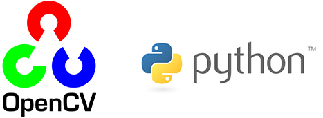
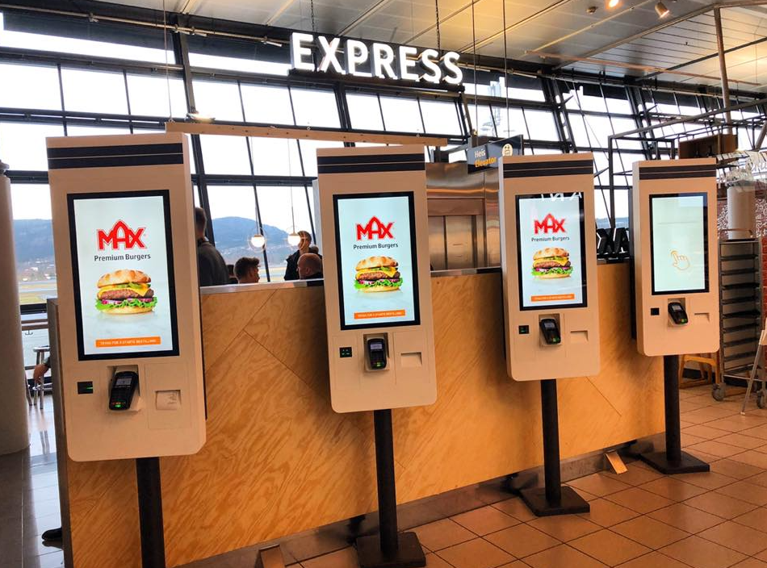

1) Programming of automated production line on Fischertechnik Factory 4.0 24V
This project was developed in the Industrial Automation course in Nueva Granada Military University, consisted in characterization and programming of 5 stations simulating a product line. Given the stations, the objective was to find the sensors and actuators of each station and assign them the function of a production chain. Stations from left to right: Distribution, Transport, Process (example: CNC), Verification (Quality check) and Classification (organization in stock)
- Click to check project paper
This laboratory practice was developed to be familiarized with Pneumatics elements (FESTO) and in this video we recreate the sequence (A+B+B-A-) using 2 cylinders A (left cylinder) and B (right cylinder). Too see more about how it was performed, check the paper below. - Click to check project paper
3) Eye tracking with predictive Kalman filter to draw the desired movement on a canvass on Python (Estimate and Actual tracking)
This project was part of the last period (October 1st to November 19th ) of the Elective course: Computer Vision 2018-(Second semester). The objective of the period's project was to choose one application that could be applied in a big proyect using OpenCV Computer Vision, for my group (David Galvis, Carlos Betancourt and Eric Buitrago) we decided an Eye Tracking application capable to draw a line reading the eye movement as an input, we decided to perform filters widely used in Autonomous vehicles.
The Kalman filter allows to predict and correct a raw and unstable input into a corrected and smooth output, our application, was targeting to disabled people (upper paraplegia, quadriplegia, etc and also with communication difficulties as vocal cord damage) so they can choose their menus in a restaurant or decisions of to-do actions on a screen at home, although some of these applications already exist, our project is based on the operating principle of Kalman filter and as a shortcut facilitating communication to be in commercial places like a mall, store or also express themselves in hospitals, with devices with a camera our software could be used to read exaclty where the eye is pointing and the be programmed to make a decision,through a software where each space of the canvas, where the view is maintained for a certain time, an action will be carried out.

For example, stare at one option in a restaurant

Or being in the doctor the patient adults/kids can express a decision holding their sight for certain time into one side of the screen, forwarding into more detailed options
4) Eye tracking with predictive Kalman filter to draw the desired movement on a canvass on Python (Estimate tracking)
This video is the second part of the previous video showed, in this case, we only show the estimate tracking, not the actual, where you could see the eye movement and also the correction made by the Kalman filter.